Hildir: plassering, varer og priser
Hildir er søsteren til Haldor. Hun selger klær, hatter og festartikler på Enga. Det meste av varelageret hennes er stjålet, og hun ber deg hente tilbake tre kister fra tre spesielle grotter og tårn.
Her finner du Hildir
Leiren til Hildir ligger på Enga, men langt fra startpunktet, som regel minst 3 000 meter fra midten av kartet. Som med Haldor finnes det opptil ti mulige leirer, og den første du nærmer deg, blir den ekte.
Et skjorteikon dukker opp på kartet ditt når du kommer nær. I leiren hennes står Hildirs kartbord. Når du leser det, markeres det nærmeste av oppdragsstedene hennes på kartet ditt.
Dette selger Hildir
I starten selger hun bare en håndfull varer. Hver kiste du leverer tilbake, låser opp en ny del av sortimentet.
| Gjenstand | Pris (mynter) | Tilgjengelig |
|---|---|---|
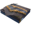 Brun kjole med sjal | 450 | etter at du har levert Hildirs sølvkiste |
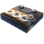 Brun kjole med perler | 550 | etter at du har levert Hildirs bronsekiste |
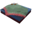 Blå kjole med sjal | 450 | etter at du har levert Hildirs sølvkiste |
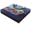 Blå kjole med perler | 550 | etter at du har levert Hildirs bronsekiste |
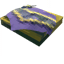 Gul kjole med sjal | 450 | etter at du har levert Hildirs sølvkiste |
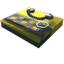 Gul kjole med perler | 550 | etter at du har levert Hildirs bronsekiste |
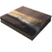 Enkel ufarget kjole | 250 | fra starten |
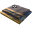 Blå tunika med kappe | 450 | etter at du har levert Hildirs sølvkiste |
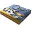 Blå tunika med perler | 550 | etter at du har levert Hildirs bronsekiste |
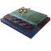 Rød tunika med kappe | 450 | etter at du har levert Hildirs sølvkiste |
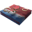 Rød tunika med perler | 550 | etter at du har levert Hildirs bronsekiste |
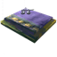 Gul tunika med kappe | 450 | etter at du har levert Hildirs sølvkiste |
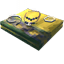 Gul tunika med perler | 550 | etter at du har levert Hildirs bronsekiste |
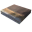 Enkel ufarget tunika | 250 | fra starten |
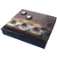 Enkel brun kjole | 350 | etter at du har levert Hildirs messingkiste |
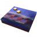 Enkel blå kjole | 350 | etter at du har levert Hildirs messingkiste |
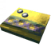 Enkel gul kjole | 350 | etter at du har levert Hildirs messingkiste |
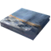 Enkel blå tunika | 350 | etter at du har levert Hildirs messingkiste |
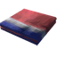 Enkel rød tunika | 350 | etter at du har levert Hildirs messingkiste |
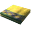 Enkel gul tunika | 350 | etter at du har levert Hildirs messingkiste |
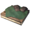 Bondetunika | 550 | etter at du har levert Hildirs messingkiste |
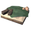 Bondekjole | 550 | etter at du har levert Hildirs messingkiste |
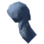 Blått skaut | 200 | etter at du har levert Hildirs messingkiste |
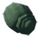 Grønt vridd skaut | 250 | etter at du har levert Hildirs sølvkiste |
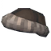 Brun pelslue | 200 | etter at du har levert Hildirs messingkiste |
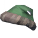 Luksuriøs grønn lue | 250 | etter at du har levert Hildirs sølvkiste |
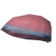 Enkel rød lue | 150 | fra starten |
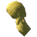 Gult knytt skaut | 250 | etter at du har levert Hildirs sølvkiste |
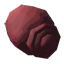 Rødt vridd skaut | 300 | etter at du har levert Hildirs bronsekiste |
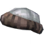 Grå pelslue | 300 | etter at du har levert Hildirs bronsekiste |
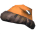 Luksuriøs oransje lue | 300 | etter at du har levert Hildirs bronsekiste |
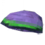 Enkel lilla lue | 150 | fra starten |
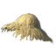 Stråhatt | 300 | etter at du har levert Hildirs messingkiste |
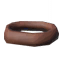 Pannebånd | 175 | fra starten |
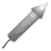 Enkelt fyrverkeri | 50 | etter at du har levert Hildirs bronsekiste |
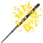 Stjerneskudd | 150 | fra starten |
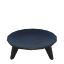 Bålpanne | 75 | fra starten |
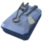 Frisørsett | 600 | fra starten |
Tips
- Messingkista ligger i et Ulmende Gravkammer i Svartskogen, sølvkista i en Ulende Grotte i Fjellet og bronsekista i et Forseglet Tårn på Sletta. Hver av dem voktes av en miniboss.
- Kistene kan ikke tas med gjennom portaler, og de er tunge. Planlegg veien tilbake til fots, med vogn eller med skip før du går inn.
- Oppdragsstedene blir vanskeligere i denne rekkefølgen. Brenna i gravkammeret gjør ildskade, Geirrhafa i grotta gjør frostskade, og de to fælingbrødrene Zil og Thungr i tårnet kjemper sammen.
- Alle oppdragsstedene er også på kartet. Slå på markørene for Hildirs oppdrag for å finne dem som ligger nærmest leiren hennes.
- Med frisørsettet bygger du en frisørstasjon, der du kan endre hår og skjegg når du vil.
- Klærne hennes er mest til pynt, men de er lette og gjør deg ikke tregere. Bonde-antrekkene er en favoritt til jordbruk.
- Bålpanna er et dekorativt ildsted, og fyrverkeri trenger et bål for å skytes opp.
Dette kan du selge
Mynter er den eneste valutaen, og du får dem ved å selge verdisaker. Alle tre kremmerne kjøper de samme gjenstandene til de samme prisene. Mynter, rubiner og rav finner du i Gravkamre, Trollhuler, Sunkne Krypter og fælinglandsbyer.
| Gjenstand | Selges for (mynter) |
|---|---|
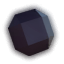 Draumyx | 175 |
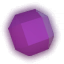 Veydris | 135 |
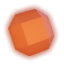 Solryth | 95 |
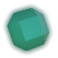 Grimvarn | 55 |
| Sølvsmykke | 30 |
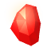 Rubin | 20 |
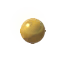 Ravperle | 10 |
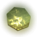 Ancient Coin | 10 |
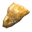 Rav | 5 |